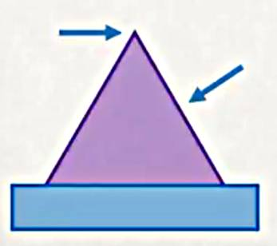
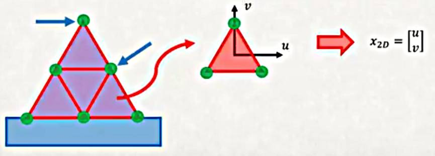

Sonlu Öğeler Metotu (Finite Elements Method -FEM-) - 3
İki boyutta FEM kullanımına gelelim. Diyelim ki alttaki gibi bir problem yarattım [1, Video 5],

Üçgen şeklinde bir yapı var, onun üzerinde iki noktadan kuvvet uygulanmış, şimdi bu üçgendeki stres ve gerilmeyi bulmak istiyorum. Bu problemi nasıl çözerdik? Euler-Bernoulli kiriş denklemini kullanmak zor, şekil ona uygun değil. Zor bir iş.
Fakat üstteki problemi bir FEM problemine dönüştürürsem işler kolaylaşabilir. Bir ızgara oluşturabilirim mesela,

Altı tane düğüm noktası ortaya çıktı, düğümsel yer değişimini hesaplayabiliriz, ve dikkat edersek düğümlerin üçü altta sabitlenmiş halde. Ama hesapla devam etmem için o görülen tüm yapının direngenliğini (stiffness) bulmam lazım, bu derste göreceğimiz ilk konu o ızgaradaki her üçgenin ayrı ayrı direngenliğini bulabilmek çünkü düğümler üzerindeki kuvvetleri biliyorsam (ki biliyorum) direngenliği kullanarak çözümde ilerleyebilirim.
Hatırlarsak çubuk ve kirişleri modellerken bir yaklaşıklama fonksiyonu kullanmıştım, bu fonksiyon yukarı ya da yana doğru bir hareketi, yer değişimini yaklaşık olarak temsil ediyordu. İki boyutta benzer bir prosedürü kullanacağız, fakat tek yön yerine iki yönü aynı anda temsil etmemiz gerekecek.

Demek ki $u_{2D} = [\begin{array}{cc} u & v \end{array}]^T$ vektörünü yaklaşıklamam lazım, genel bir metot şöyle olabilir,
$$ u_{2D} = \left[\begin{array}{c} a_0 + a_1 X_1 + a_2 X_2 + a_3 X_1 X_2 + ...\\ b_0 + b_1 X_1 + b_2 X_2 + b_3 X_1 X_2 + ... \end{array}\right] $$
Tek yaptığımız tek yönde yaklaşıklama yerine iki yönde yaklaşık bir temsil kullanmak.
Fakat daha önce baktığımız 1D FEM örneğinden hatırlarsak yer değişim yaklaşık fonksiyonunu düğümsel yer değişiklikleri ($u_i$ ve $v_i$) ve şekil fonksiyonları ($N_i$ gibi) üzerinden temsil etmek istiyoruz. Üstteki değişim tüm üçgene bakıyor, biz üçgenin düğümlerini temsil etmek istiyoruz.

O zaman herhangi bir FEM öğesi için yer değişimini, genel olarak, düğümleri üzerinden
$$ u_{2D} = \left[\begin{array}{c} u_1 N_1 + u_2 N_2 + .. + u_n N_N \\ v_1 N_1 + v_2 N_2 + .. + v_n N_N \end{array}\right] $$
ile gösterebilirim. Üstteki üçgen öğe örneğinde
$$ u_{2D} = \left[\begin{array}{c} u_1 N_1 + u_2 N_2 + u_3 N_3 \\ v_1 N_1 + v_2 N_2 + v_3 N_3 \end{array}\right] $$
yeterlidir. $x_{2D}$ vektörünü bir matris vektör çarpımı haline getirebiliriz,
$$ u_{2D} = \left[\begin{array}{c} u \\ v \end{array}\right] = \left[\begin{array}{ccccccc} N_1 & 0 & N_2 & 0 & \dots & N_n & 0 \\ 0 & N_1 & 0 & N_2 & 0 & \dots & N_n \end{array}\right] \left[\begin{array}{c} u_1 \\ v_1 \\ u_2 \\ v_2 \\ \dots \\ u_n \\ v_n \end{array}\right] \qquad (1) $$
Daha kısa olarak
$$ \implies u_{2D} = [N] u_e $$
denebilir. Dikkat edersek $N$ fonksiyonları $X_1,X_2$ değişkenlerinin birer fonksiyonu, $u_i,v_i$ değerleri ise sabit.
Bu noktada elimde genel bir yer değişim fonksiyonu var, onu kullanarak bir gerilme (strain) vektörü hesaplayabilirim, [3,4]'te işlendi, iki boyutta $\epsilon$'un sadece üç tane öğesi var,
$$ \epsilon = \left[\begin{array}{c} \epsilon_{11} \\ \epsilon_{22} \\ 2 \epsilon_{12} \end{array}\right] = \left[\begin{array}{c} \dfrac{\partial u}{\partial X_1} \\ \dfrac{\partial v}{\partial X_2} \\ \dfrac{\partial u}{\partial X_2} + \dfrac{\partial v}{\partial X_1} \end{array}\right] \qquad (2) $$
Üstteki degerler nereden geldi? Sonsuz Küçük Gerinim Tensörünü hatırlarsak,
$$ \left[\begin{array}{ccc} \frac{\partial u_1}{\partial X_1} & \frac{1}{2}(\frac{\partial u_1}{\partial X_2} + \frac{\partial u_2}{\partial X_1} ) & \frac{1}{2}(\frac{\partial u_1}{\partial X_3} + \frac{\partial u_3}{\partial X_1} ) \\ \frac{1}{2}(\frac{\partial u_1}{\partial X_2} + \frac{\partial u_2}{\partial X_1} ) & \frac{\partial u_2}{\partial X_2} & \frac{1}{2}(\frac{\partial u_2}{\partial X_3} + \frac{\partial u_3}{\partial X_2} ) \\ \frac{1}{2}(\frac{\partial u_1}{\partial X_3} + \frac{\partial u_3}{\partial X_1} ) & \frac{1}{2}(\frac{\partial u_2}{\partial X_3} + \frac{\partial u_3}{\partial X_2} ) & \frac{\partial u_3}{\partial X_3} \end{array}\right] $$
Bu tensörün 1'inci satır 1'inci kolonu $\epsilon_{11}$, 1'inci satır 2'inci kolonu $\epsilon_{12}$ vs. ayrıca bizim burada $u$ dediğimiz üstteki matriste $u_1$, $v$ dediğimiz ise üstteki matriste $u_2$ ve iki boyutta olduğumuzu hatırlayalım, o zaman $u_3$ ile ilgilenmiyoruz. Aynı sebepten dolayı $\epsilon_{33}$, $\epsilon_{31}$ gerekli değil. Üç boyuta sonra geleceğiz ve o zaman garanti ederim çok daha karmaşık sonuçlar göreceğiz.
Notasyonel bir konuya dikkat, [1, Video 5]'te $x_{2D}$ kullanıldı, bu harf daha önceki $x$, değişim sonrası varılan yer ile karıştırılmasın, hoca çok boyutlu bir yer değişimden bahsediyor daha önce $u$ ile gösterilen. Yani üstteki matriste $u$'nun $X_1$'e göre türevi $x_{2D}$ üzerinden, yani $x_{2D} = [N] u_e$ üzerinden alınacak.
Devam edelim, (2) türev işlemlerini (1) üzerinde uygulayalım şimdi. $u_e$ içeriği sabit olacağı için türev $[N]$ matrisi üzerinden alınır.
$$ \epsilon = \left[\begin{array}{ccccccc} \dfrac{\partial N_1}{\partial X_1} & 0 & \dfrac{\partial N_2}{\partial X_1} & 0 & \dots & \dfrac{\partial N_n}{\partial X_1} & 0 \\ 0 & \dfrac{\partial N_1}{\partial X_1} & 0 & \dfrac{\partial N_2}{\partial X_1} & \dots & 0 & \dfrac{\partial N_n}{\partial X_1} \\ \dfrac{\partial N_1}{\partial X_2} & \dfrac{\partial N_1}{\partial X_1} & \dfrac{\partial N_2}{\partial X_2} & \dfrac{\partial N_2}{\partial X_1} & \dots & \dfrac{\partial N_n}{\partial X_2} & \dfrac{\partial N_n}{\partial X_1} \end{array}\right] \left[\begin{array}{c} u_1 \\ v_1 \\ u_2 \\ v_2 \\ \dots \\ u_n \\ v_n \end{array}\right] $$
Yukarıdaki formülü $\epsilon = [B] u_e$ olarak ta gösterebiliriz, üstte görülen matris $B$ matrisi olarak biliniyor.
Bir kez gerilme sonuçlarını elde edince stres matrisini hesaplayabiliriz, bu tek boyutta bir katsayı çarpımı ile oluyordu çok boyutta bir katsayı matrisi $[C]$ ile çarpacağız,
$$ \sigma = \left[\begin{array}{c} \sigma_{11} \\ \sigma_{22} \\ \sigma_{12} \end{array}\right] = [C] \left[\begin{array}{c} \epsilon_{11} \\ \epsilon_{22} \\ 2 \epsilon_{12} \end{array}\right] = [C] \epsilon $$
[devam edecek]
Kaynaklar
[1] Petitt, Intro to the Finite Element Method, University of Alberta, https://www.youtube.com/watch?v=2iUnfPRk6Ro&list=PLLSzlda_AXa3yQEJAb5JcmsVDy9i9K_fi
[2] Petitt, Finite Element Method Theory, University of Alberta, https://www.youtube.com/watch?v=2iUnfPRk6Ro&list=PLLSzlda_AXa3yQEJAb5JcmsVDy9i9K_fi
[3] Bayramlı, Fizik, Materyel Mekaniği 2
[4] Bayramlı, Fizik, Materyel Mekaniği 1
Yukarı